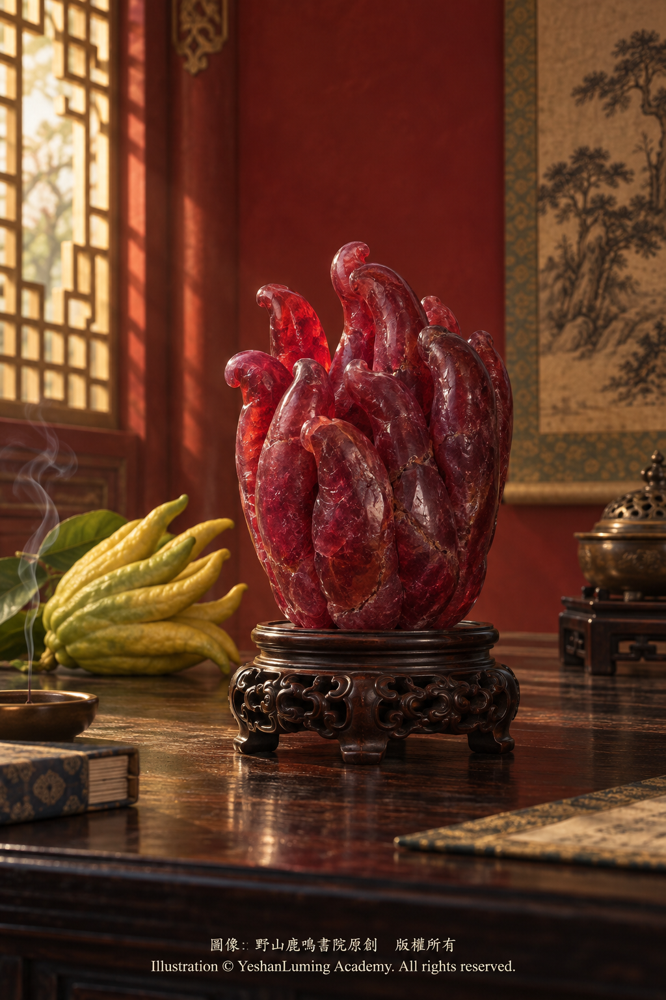

故宮紅寶石佛手 · 清初紅色奇珍中的福壽密碼The Palace Museum Ruby Buddha’s Hand · Auspicious Messages Hidden Within an Early Qing Treasure
The World of Gemstones · Ruby SeriesThe Palace Museum Ruby Buddha’s Hand · Auspicious Messages Hidden Within an Early Qing Treasure
The World of Gemstones · Ruby Series故宮紅寶石佛手 · 清初紅色奇珍中的福壽密碼
寶石世界·紅寶石篇
寶石世界·紅寶石篇（116）The World of Gemstones · Ruby Series (116)
在前面的世界名石專題中，我們介紹了多顆享譽國際的紅寶石。它們或被鑲嵌在璀璨的戒指與手鍊上，或陳列於歐美著名博物館，或在國際拍賣場上創下令人驚嘆的成交紀錄。
然而，紅寶石進入人類文明之後，並不只有切磨成刻面寶石、鑲嵌成高級珠寶這一條道路。
在中國傳統文化與宮廷工藝中，一塊紅色剛玉還可能被雕刻成承載吉祥寓意的藝術品。它的價值不再只由顏色、透明度、克拉重量和切工決定，也來自雕刻技藝、歷史年代與文化象徵。
北京故宮博物院收藏的清代紅寶石佛手，便是這類寶石文物中極為特殊的代表。
與國際拍賣場上那些追求通透度、對稱比例與光線回返的刻面紅寶石不同，紅寶石佛手並沒有被切磨成戒面，而是被工匠順應原料的天然形態，雕刻成一枚具有中國文化特色的佛手果。
它將紅寶石的自然之美與中國傳統的福壽觀念結合在一起，也使一塊深藏於地層中的剛玉晶體，最終轉化成一件充滿吉祥含義的歷史文物。
根據故宮博物院公布的藏品總目，故宮現藏兩件名稱相近、但文物編號不同的清代紅寶石佛手。
第一件名為「紅寶石佛手」，年代被定為清順治，文物編號為「新00086131」。
第二件名為「紅寶石雕蝠壽紋佛手」，同樣被定為清順治，文物編號為「新00136441」。
北京市文物局公布的館藏一級文物名錄中，還明確列出了故宮博物院收藏的「紅寶石雕蝠壽紋佛手」。因此，這件雕件不僅確實存在，也具有正式的一級文物身份。
這項官方記錄非常重要，因為網路上流傳的許多文章，常常把「紅寶石佛手」與「紅寶石雕蝠壽紋佛手」當成同一件文物，並把兩件藏品的名稱、重量、尺寸和雕刻紋飾混合在一起。
在前面的世界名石專題中，我們介紹了多顆享譽國際的紅寶石。它們或被鑲嵌在璀璨的戒指與手鍊上，或陳列於歐美著名博物館，或在國際拍賣場上創下令人驚嘆的成交紀錄。
然而，紅寶石進入人類文明之後，並不只有切磨成刻面寶石、鑲嵌成高級珠寶這一條道路。
在中國傳統文化與宮廷工藝中，一塊紅色剛玉還可能被雕刻成承載吉祥寓意的藝術品。它的價值不再只由顏色、透明度、克拉重量和切工決定，也來自雕刻技藝、歷史年代與文化象徵。
北京故宮博物院收藏的清代紅寶石佛手，便是這類寶石文物中極為特殊的代表。
與國際拍賣場上那些追求通透度、對稱比例與光線回返的刻面紅寶石不同，紅寶石佛手並沒有被切磨成戒面，而是被工匠順應原料的天然形態，雕刻成一枚具有中國文化特色的佛手果。
它將紅寶石的自然之美與中國傳統的福壽觀念結合在一起，也使一塊深藏於地層中的剛玉晶體，最終轉化成一件充滿吉祥含義的歷史文物。
根據故宮博物院公布的藏品總目，故宮現藏兩件名稱相近、但文物編號不同的清代紅寶石佛手。
第一件名為「紅寶石佛手」，年代被定為清順治，文物編號為「新00086131」。
第二件名為「紅寶石雕蝠壽紋佛手」，同樣被定為清順治，文物編號為「新00136441」。
北京市文物局公布的館藏一級文物名錄中，還明確列出了故宮博物院收藏的「紅寶石雕蝠壽紋佛手」。因此，這件雕件不僅確實存在，也具有正式的一級文物身份。
這項官方記錄非常重要，因為網路上流傳的許多文章，常常把「紅寶石佛手」與「紅寶石雕蝠壽紋佛手」當成同一件文物，並把兩件藏品的名稱、重量、尺寸和雕刻紋飾混合在一起。
目前在珠寶及文物資料中廣泛流傳的一組數據，是這件紅寶石雕刻長5.92公分、寬3.648公分、高5.98公分，重量達667.69克拉。667.69克拉相當於約133.54克。對一件以天然剛玉材料雕刻而成的器物而言，這是一個極為可觀的重量。
不過，目前公開可查的故宮藏品總目屬於簡目，只列出文物名稱、年代和編號，沒有同時公布這組尺寸與重量。因此，在取得故宮完整藏品檔案或正式出版圖錄之前，我們只能說，這組數據被多種珠寶及文物資料反覆引用，但它究竟對應「紅寶石佛手」，還是「紅寶石雕蝠壽紋佛手」，仍有待進一步核實。
這項區分並不是無關緊要的文字問題。
如果667.69克拉與上述尺寸屬於第一件「紅寶石佛手」，那麼網路文章把第二件「紅寶石雕蝠壽紋佛手」上的蝙蝠紋飾也加在它身上，就可能是把兩件文物的資料拼接在了一起。
因此，對這件文物最負責任的介紹方式，不是把所有流傳資料都當成確定事實，而是清楚區分官方記錄、廣泛轉載的數據，以及尚待考證的細節。
無論這組重量和尺寸最終屬於哪一件，故宮收藏紅寶石佛手本身，已經是一項十分罕見的事實。
作為天然紅寶石，它在礦物學上屬於剛玉，具有莫氏硬度9、折射率通常約為1.762—1.770、雙折射約為0.008、相對密度約為4.00等基本物理性質。
莫氏硬度9意味著剛玉具有極高的耐磨性，但硬度高並不等於不會破裂。紅寶石仍然可能因內部裂隙、解理狀裂紋或外力衝擊而受損。對雕刻工匠而言，在如此堅硬而又可能存在天然裂隙的材料上完成立體雕刻，需要極大的耐心、經驗與風險控制。
為什麼工匠沒有把這塊紅寶石切磨成一顆或數顆刻面寶石，而是選擇將它雕刻成佛手？
我們目前沒有發現記錄這項決定的原始工藝檔案，因此不能確定當時工匠的真正考慮。不過，從寶石加工的一般原理來看，大型剛玉原料如果透明度有限、內部裂隙較多、色帶分布不均，或者天然外形不適合切磨成高品質刻面寶石，順應原料形態進行雕刻，便可能比追求通透刻面更能保存重量與整體美感。
雕刻者也可能利用原料表面的凹凸、色彩深淺與天然裂隙，把原本被視為缺點的部分轉化成佛手果彎曲、分叉的「指瓣」，使礦物的天然形態成為藝術構圖的一部分。
不過，這只是根據寶石加工原理作出的合理分析，並不是對這件故宮文物製作過程的確定復原。
佛手是佛手柑的一個栽培變種。果實成熟後分裂成多條細長而彎曲的果瓣，外形如同手指，因而得名。
在中國傳統文化中，佛手並不只是植物果實，也是一種廣受喜愛的吉祥題材。「佛」與「福」在民間寓意中彼此聯繫，「手」又常被引申為「壽」，因此佛手逐漸成為多福、長壽與吉祥的象徵。
真正的佛手果具有持久而清雅的柑橘芳香。明清時期，人們常把佛手放在盤中，陳設於宮廷、書齋和居室，作為兼具觀賞、聞香與吉祥意義的清供。
如果雕件上同時出現蝙蝠，寓意便更加明確。蝙蝠的「蝠」與幸福的「福」同音，佛手與蝙蝠相互配合，可以表達多福、多壽、福壽相連等吉祥願望。
不過，佛手果的名稱雖然帶有一個「佛」字，這類雕件的主要含義仍然來自植物造型、諧音文化與世俗吉祥觀念。把它直接解釋為佛陀之手或「佛光普照」，並沒有足夠的文物學根據。
故宮把兩件紅寶石佛手的年代都定為清順治。順治帝在位於1644年至1661年，這正是清王朝入主中原後的早期階段。
有些網路文章進一步宣稱，這件紅寶石佛手是由清宮造辦處工匠雕刻而成。然而，根據故宮博物院公布的資料，清宮造辦處是在康熙時期逐步建立和完善的。康熙十九年，即1680年，已有武英殿造辦處的記錄；此後養心殿造辦處及各類作坊才逐漸形成制度。
因此，如果這件文物確實製作於順治時期，直接說它出自後來制度化的清宮造辦處，便會產生年代上的矛盾。
它可能由清初宮廷所召集的工匠製作，也可能由宮外工匠承製，甚至可能以成品形式進入宮廷或收藏體系。但在沒有原始檔案以前，這些都只能是可能性，不能寫成已經證實的結論。
這件紅寶石原料的產地同樣存在疑問。
許多後來的文章把它記載為來自緬甸，甚至進一步宣稱它是緬甸向清朝進獻的朝貢禮物。從歷史與寶石學角度看，緬甸長期是亞洲最重要的紅寶石來源之一，大型紅寶石材料經由貿易或朝貢進入中國宮廷，並非不可能。
然而，到目前為止，我們尚未見到與這件文物直接對應的清代貢物清單、使團檔案或現代寶石實驗室產地報告。
因此，更為嚴謹的說法是：這件紅寶石佛手的原料常被後世資料記為來自緬甸，但其確切產地與進入中國的方式，目前尚無足夠的公開證據可以確認。

Click to enlarge
民間還流傳著一個更加曲折的故事。
按照某些地方傳說，這件紅寶石佛手曾經與吳三桂、陳圓圓或其家族後人的墓葬有關，後來墓葬被盜，紅寶石佛手流入民間，最終又經文物工作者或收藏者捐贈，進入故宮博物院。
這個故事包含王朝更替、愛情傳說、墓葬盜掘、寶物流轉與重歸國家收藏等多重情節，確實極富戲劇性。
但是，目前能夠看到的相關敘述主要來自地方傳說、自媒體文章與後來的網路轉載。我們尚未找到故宮入藏檔案、正式考古報告、捐贈記錄或可靠學術研究，能夠證明這件文物曾經出土於陳圓圓或吳三桂家族的墓葬。
傳說中也沒有清楚回答：這件寶物如何從清宮或朝貢體系進入吳氏家族、何時成為隨葬品、何時被盜、由誰追回，以及究竟對應故宮所藏兩件紅寶石佛手中的哪一件。
因此，這段故事目前只能作為民間傳說記錄，不能作為已經獲得證實的文物傳承史。
民間傳說本身也是歷史文化的一部分。實事求是地記錄「人們曾經如何講述它」，與斷言「事情確實如此發生」，是兩種完全不同的寫作態度。
故宮藏品總目中，還列有一件「藍寶石雕佛手」，文物編號為「故00009640」，年代同樣被定為清順治。
部分資料稱這件藍寶石佛手重達2606.2克拉，並把它與紅寶石佛手稱為清宮中的「姐妹寶」。不過，目前公開的故宮簡目沒有公布這一重量，也沒有說明兩件作品是否由同一批工匠製作或曾經成組陳設。
所以，目前可以確認的是故宮確實藏有清順治藍寶石雕佛手；至於它與紅寶石佛手是否具有直接的成組關係，仍需進一步研究。
網路上還有一種流傳很廣的說法，稱故宮紅寶石佛手與某顆大型星光紅寶石原石及美國史密森尼的卡門·露西亞紅寶石，並列為「世界三大頂級紅寶石」。
這並不是任何國際寶石學機構、博物館體系或拍賣行公認的分類。
紅寶石佛手是歷史雕刻文物，大型星光紅寶石原石屬於礦物或寶石材料，卡門·露西亞則是高品質刻面紅寶石。三者的形態、品質標準、文化價值和收藏體系完全不同，無法按照同一套標準排出所謂「世界三大」。
故宮紅寶石佛手不需要依靠這種缺乏根據的世界排名，來證明自己的價值。
它真正無可取代之處，在於它與此前介紹的世界名石走上了完全不同的道路。
西方高級珠寶傳統往往希望通過切磨和鑲嵌，讓光線在紅寶石內部反射，呈現明亮的紅色、火彩與透明度。中國傳統工藝則更重視順應材料本身的形態，通過雕刻賦予寶石新的形象、寓意與人文精神。
同一種剛玉礦物，可以在日內瓦或紐約的拍賣場上成為創造價格紀錄的戒指，也可以在中國工匠手中成為寄託福壽願望的佛手。
前者使人看見寶石的光學之美，後者則讓人看見寶石進入不同文明之後，所獲得的文化生命。
故宮紅寶石佛手最值得我們珍視的，或許不只是它究竟有多少克拉，也不只是它是否來自緬甸、是否曾經屬於某一位歷史人物。
它的重要意義，在於一塊古老的紅色剛玉，經過中國工匠的觀察與雕琢，最終變成一枚象徵幸福、長壽與美好願望的東方奇珍。
在世界著名紅寶石的歷史長卷中，它沒有西方拍賣場上震撼人心的落槌聲，也沒有好萊塢名人或歐洲王室留下的愛情銘文。
但是，在那一簇簇如手指般彎曲的紅色果瓣之間，保存著中國人對福、壽與圓滿的古老想像。
這正是故宮紅寶石佛手在世界紅寶石故事中，最獨特、也最不可替代的位置。
故宮紅寶石佛手主要資料
藏品名稱之一： 紅寶石佛手
文物編號： 新00086131
年代： 清順治
藏品名稱之二： 紅寶石雕蝠壽紋佛手
文物編號： 新00136441
年代： 清順治
收藏地： 北京故宮博物院
文物級別： 「紅寶石雕蝠壽紋佛手」被列入北京市國有文物收藏單位館藏一級文物名錄
材質： 故宮藏品總目登記為紅寶石
流傳重量： 667.69克拉，相當於約133.54克；具體對應哪一件紅寶石佛手，仍待原始檔案核實
流傳尺寸： 長5.92公分、寬3.648公分、高5.98公分；仍待故宮完整圖錄核實
雕刻題材： 佛手果；其中一件明確登記為蝠壽紋
文化寓意： 多福、多壽、福壽相連
礦物種類： 紅寶石，屬於剛玉礦物
可能產地： 後世資料常記為緬甸，但缺乏公開實驗室報告或直接對應的清代進貢檔案
製作機構： 尚無確切資料；因年代被定為順治，不宜直接斷言由康熙時期逐步建立的造辦處製作
傳承經歷： 尚無完整公開的入藏與流傳檔案
民間傳說： 部分說法將其與吳三桂、陳圓圓家族墓葬及後來的盜掘、捐贈聯繫起來，目前尚未獲得故宮檔案或正式考古資料證實
相關館藏： 故宮另藏一件清順治藍寶石雕佛手，文物編號故00009640；是否與紅寶石佛手成組，尚無確切資料
歷史意義： 中國清初寶石雕刻、吉祥文化與大型紅色剛玉材料相互結合的重要文物
（未完待續）
In the preceding chapters on the world’s celebrated gemstones, we introduced several internationally renowned rubies. Some were mounted in magnificent rings and bracelets, some entered the collections of prominent museums in Europe and the United States, while others achieved astonishing prices at international auctions.
Yet once ruby entered human civilization, faceting it and setting it into fine jewelry was not the only path it could take.
Within the traditions of Chinese culture and imperial craftsmanship, a piece of red corundum could also be carved into a work of art bearing auspicious meaning. Its value would no longer be determined solely by color, transparency, carat weight, and cut, but also by the skill of the carving, its historical period, and its cultural symbolism.
The Qing-dynasty ruby Buddha’s hand carvings in the collection of the Palace Museum in Beijing are exceptional examples of this distinctive class of gemstone artifact.
Unlike the faceted rubies of international auction houses, whose beauty is judged partly by transparency, symmetry, and the return of light, the ruby Buddha’s hand was not fashioned into a faceted jewel. Instead, a craftsman followed the natural form of the material and carved it into a Buddha’s hand citron imbued with the characteristics of Chinese culture.
It unites the natural beauty of ruby with traditional Chinese ideas of good fortune and longevity, transforming a crystal of corundum once hidden deep within the earth into a historical artifact filled with auspicious meaning.
According to the general collection catalogue published by the Palace Museum, the museum holds two Qing-dynasty ruby Buddha’s hand carvings with similar names but different accession numbers.
The first is recorded as the “Ruby Buddha’s Hand,” dated to the Shunzhi period of the Qing dynasty, with the accession number Xin 00086131.
The second is recorded as the “Ruby Buddha’s Hand Carved with Bat and Longevity Motifs,” likewise dated to the Shunzhi period, with the accession number Xin 00136441.
The register of first-class cultural relics held by state-owned institutions, published by the Beijing Municipal Cultural Heritage Bureau, also explicitly lists the “Ruby Buddha’s Hand Carved with Bat and Longevity Motifs” in the collection of the Palace Museum. This confirms not only the existence of the carving, but also its official status as a first-class cultural relic.
This official record is particularly important because many articles circulating online treat the “Ruby Buddha’s Hand” and the “Ruby Buddha’s Hand Carved with Bat and Longevity Motifs” as though they were the same artifact, combining the names, weight, dimensions, and decorative motifs of two separate objects.
In the preceding chapters on the world’s celebrated gemstones, we introduced several internationally renowned rubies. Some were mounted in magnificent rings and bracelets, some entered the collections of prominent museums in Europe and the United States, while others achieved astonishing prices at international auctions.
Yet once ruby entered human civilization, faceting it and setting it into fine jewelry was not the only path it could take.
Within the traditions of Chinese culture and imperial craftsmanship, a piece of red corundum could also be carved into a work of art bearing auspicious meaning. Its value would no longer be determined solely by color, transparency, carat weight, and cut, but also by the skill of the carving, its historical period, and its cultural symbolism.
The Qing-dynasty ruby Buddha’s hand carvings in the collection of the Palace Museum in Beijing are exceptional examples of this distinctive class of gemstone artifact.
Unlike the faceted rubies of international auction houses, whose beauty is judged partly by transparency, symmetry, and the return of light, the ruby Buddha’s hand was not fashioned into a faceted jewel. Instead, a craftsman followed the natural form of the material and carved it into a Buddha’s hand citron imbued with the characteristics of Chinese culture.
It unites the natural beauty of ruby with traditional Chinese ideas of good fortune and longevity, transforming a crystal of corundum once hidden deep within the earth into a historical artifact filled with auspicious meaning.
According to the general collection catalogue published by the Palace Museum, the museum holds two Qing-dynasty ruby Buddha’s hand carvings with similar names but different accession numbers.
The first is recorded as the “Ruby Buddha’s Hand,” dated to the Shunzhi period of the Qing dynasty, with the accession number Xin 00086131.
The second is recorded as the “Ruby Buddha’s Hand Carved with Bat and Longevity Motifs,” likewise dated to the Shunzhi period, with the accession number Xin 00136441.
The register of first-class cultural relics held by state-owned institutions, published by the Beijing Municipal Cultural Heritage Bureau, also explicitly lists the “Ruby Buddha’s Hand Carved with Bat and Longevity Motifs” in the collection of the Palace Museum. This confirms not only the existence of the carving, but also its official status as a first-class cultural relic.
This official record is particularly important because many articles circulating online treat the “Ruby Buddha’s Hand” and the “Ruby Buddha’s Hand Carved with Bat and Longevity Motifs” as though they were the same artifact, combining the names, weight, dimensions, and decorative motifs of two separate objects.
One widely circulated set of measurements states that the ruby carving is 5.92 centimeters long, 3.648 centimeters wide, and 5.98 centimeters high, with a weight of 667.69 carats. That weight is equivalent to approximately 133.54 grams—an exceptionally substantial amount of material for an object carved from natural corundum.
However, the publicly accessible Palace Museum collection catalogue is only a summary listing. It provides the names, dates, and accession numbers of the objects, but does not include these dimensions or this weight. Until the museum’s complete collection records or an authoritative published catalogue can be consulted, we can say only that these figures have been repeatedly cited in various jewelry and cultural-relic sources. Whether they refer to the “Ruby Buddha’s Hand” or the “Ruby Buddha’s Hand Carved with Bat and Longevity Motifs” remains to be verified.
This distinction is more than a trivial matter of wording.
If the weight of 667.69 carats and the dimensions given above belong to the first object, the “Ruby Buddha’s Hand,” then online articles that also attribute the bat motif of the second object to it may have combined information from two different artifacts.
The most responsible way to introduce these carvings, therefore, is not to treat every circulating claim as an established fact, but to distinguish clearly among official records, widely repeated figures, and details that still require further investigation.
Whichever of the two objects the measurements and weight ultimately belong to, the confirmed presence of ruby Buddha’s hand carvings in the Palace Museum collection is already an exceptionally rare and important fact.
As natural ruby, the material belongs mineralogically to corundum. It has a Mohs hardness of 9, a typical refractive index of approximately 1.762–1.770, birefringence of about 0.008, and a relative density of approximately 4.00.
A Mohs hardness of 9 means that corundum is highly resistant to abrasion, but hardness does not make it immune to breakage. Ruby can still be damaged by internal fissures, cleavage-like fractures, or external impact. For a craftsman, completing a three-dimensional carving in material that is both extremely hard and potentially affected by natural fractures would have required considerable patience, experience, and careful management of risk.
Why did the craftsman choose to carve this ruby into a Buddha’s hand rather than cut it into one or more faceted gemstones?
We have not found an original workshop record documenting that decision, and therefore cannot know the craftsman’s actual reasoning. From the general principles of gemstone working, however, a large piece of corundum with limited transparency, numerous internal fissures, uneven color zoning, or a natural form unsuitable for producing high-quality faceted stones may be better suited to carving. Following the original shape of the material could preserve more of its weight and overall visual beauty than attempting to create transparent faceted gems.
The carver may also have incorporated the irregular contours, variations in color, and natural fissures of the material into the curving, divided “fingers” of the Buddha’s hand fruit, transforming features that might otherwise have been regarded as imperfections into elements of the artistic composition.
This, however, is only a reasonable interpretation based on general gemstone-working principles. It is not a confirmed reconstruction of how the Palace Museum carvings were actually made.
The Buddha’s hand is a cultivated variety of citron. When mature, the fruit divides into numerous long, slender, curving sections resembling fingers, from which its name is derived.
In traditional Chinese culture, the Buddha’s hand is more than a botanical fruit; it is also a widely cherished auspicious motif. The word *fo*, meaning Buddha, became associated in popular symbolism with *fu*, meaning good fortune, while *shou*, or hand, was in turn linked with *shou*, meaning longevity. The Buddha’s hand therefore gradually came to symbolize abundant blessings, long life, and good fortune.
The actual Buddha’s hand citron possesses a delicate and enduring citrus fragrance. During the Ming and Qing dynasties, the fruit was often arranged on dishes and displayed in palaces, scholars’ studios, and private residences as a form of *qinggong*—an elegant object appreciated for its appearance, fragrance, and auspicious associations.
If a bat also appears on the carving, the symbolic meaning becomes even more explicit. The Chinese word for bat, *fu*, is pronounced like the word for good fortune. When the Buddha’s hand and the bat are combined, they may express wishes for abundant blessings, longevity, and the union of good fortune with long life.
Although the Chinese name for the fruit contains the character meaning “Buddha,” the primary significance of carvings such as these comes from the plant’s form, linguistic associations, and secular traditions of auspicious symbolism. Interpreting the object literally as the hand of the Buddha or as a representation of “the universal radiance of Buddhist light” is not sufficiently supported by the available evidence from cultural-relic studies.
The Palace Museum dates both ruby Buddha’s hand carvings to the Shunzhi period of the Qing dynasty. The Shunzhi Emperor reigned from 1644 to 1661, during the early years following the Qing conquest of China.
Some online articles go further, claiming that the ruby Buddha’s hand was carved by craftsmen of the Qing imperial Zaobanchu, or Imperial Workshops. According to information published by the Palace Museum, however, the Qing Zaobanchu was gradually established and developed during the Kangxi period. Records of a Zaobanchu at the Wuying Hall appear in 1680, the nineteenth year of the Kangxi reign, while the Zaobanchu at the Hall of Mental Cultivation and its various specialist workshops became institutionalized later.
Consequently, if these objects were indeed produced during the Shunzhi period, directly attributing them to the subsequently institutionalized Qing imperial Zaobanchu would create a chronological inconsistency.
They may have been made by craftsmen assembled by the early Qing court, commissioned from artisans outside the palace, or even brought into the palace or imperial collection as completed objects. Without original documentary evidence, however, these possibilities cannot be presented as established conclusions.
The geographical origin of the ruby material is another unresolved question.
Many later accounts identify it as Burmese and go so far as to claim that it entered the Qing court as tribute from Burma. Historically and gemologically, Burma was one of Asia’s most important sources of ruby, and it is entirely possible that large pieces of ruby material entered the Chinese imperial court through trade or tributary exchange.
To date, however, we have not encountered a Qing tribute inventory, diplomatic record, or modern gemological laboratory report that can be linked directly to either of these particular artifacts.
The more rigorous formulation, therefore, is that later sources frequently describe the ruby material as Burmese, but that neither its precise geographical origin nor the means by which it entered China can presently be confirmed from sufficient publicly available evidence.
Click to enlarge
A far more dramatic story also circulates in popular tradition.
According to certain local legends, the ruby Buddha’s hand was once connected with the tomb of Wu Sangui, Chen Yuanyuan, or descendants of their family. The tomb was later allegedly robbed, after which the carving passed into private hands before eventually being donated to the Palace Museum by a cultural heritage worker or collector.
The story combines dynastic upheaval, legendary romance, tomb robbery, the circulation of treasure, and its eventual return to a national collection. It is undeniably rich in dramatic appeal.
At present, however, the available versions of this account come primarily from local tradition, self-published media, and later online repetition. We have not found Palace Museum accession records, formal archaeological reports, donation documents, or reliable academic research proving that either carving was excavated from a tomb associated with Chen Yuanyuan or the family of Wu Sangui.
Nor does the legend explain clearly how the treasure passed from the Qing court or tributary system into the possession of the Wu family, when it became a burial object, when the tomb was robbed, who recovered it, or which of the Palace Museum’s two ruby Buddha’s hand carvings it is supposed to describe.
This story must therefore remain recorded as folklore rather than presented as a verified provenance for the artifact.
Folklore is itself part of cultural history. Yet faithfully recording “how people have told the story” is fundamentally different from asserting that “the events happened exactly this way.”
The Palace Museum’s collection catalogue also lists a “Sapphire Buddha’s Hand,” accession number Gu 00009640, which is likewise dated to the Shunzhi period of the Qing dynasty.
Some sources state that this sapphire carving weighs 2,606.2 carats and describe it and the ruby Buddha’s hand as a pair of “sister treasures” from the Qing court. The publicly accessible Palace Museum summary catalogue, however, does not provide this weight or state that the two works were made by the same group of craftsmen or originally displayed as a pair.
What can presently be confirmed is that the Palace Museum does indeed hold a sapphire Buddha’s hand carving dated to the Shunzhi period. Whether it formed an intentional pair with either ruby Buddha’s hand requires further research.
Another widely circulated online claim places the Palace Museum ruby Buddha’s hand alongside a large rough star ruby and the Carmen Lúcia Ruby at the Smithsonian, describing them collectively as “the world’s three greatest rubies.”
This is not a classification recognized by any international gemological institution, museum system, or auction house.
The ruby Buddha’s hand is a historical carved artifact, the large rough star ruby is a mineral or gemstone specimen, and the Carmen Lúcia is a high-quality faceted ruby. Their forms, standards of quality, cultural significance, and collecting contexts are entirely different. They cannot reasonably be ranked together according to a single standard as a supposed “world top three.”
The Palace Museum ruby Buddha’s hand does not require an unsupported global ranking to establish its importance.
Its truly irreplaceable character lies in the fact that it followed an entirely different path from the celebrated gemstones introduced in the preceding chapters.
Western traditions of fine jewelry have often sought, through cutting and setting, to make light reflect within a ruby and reveal its brilliance, fire, and transparency. Traditional Chinese craftsmanship placed greater emphasis on responding to the inherent form of the material and using carving to endow it with a new image, meaning, and human spirit.
The same corundum mineral can become a record-breaking ring in an auction room in Geneva or New York, or, in the hands of a Chinese craftsman, a Buddha’s hand embodying wishes for good fortune and longevity.
The former reveals the optical beauty of the gemstone; the latter reveals the cultural life that a gemstone can acquire after entering a different civilization.
What deserves our greatest appreciation about the Palace Museum ruby Buddha’s hand may not be merely its exact carat weight, whether it originated in Burma, or whether it once belonged to a particular historical figure.
Its importance lies in the transformation of an ancient piece of red corundum, through the observation and craftsmanship of a Chinese artisan, into an Eastern treasure symbolizing happiness, longevity, and humanity’s hopes for a beautiful life.
Within the long history of the world’s celebrated rubies, it carries neither the dramatic fall of an auctioneer’s hammer nor a romantic inscription left by a Hollywood celebrity or European royal family.
Yet among those clusters of red, finger-like segments survives an ancient Chinese vision of blessing, longevity, and fulfillment.
This is the unique and irreplaceable place occupied by the Palace Museum ruby Buddha’s hand among the world’s great ruby stories.
Essential Information About the Palace Museum Ruby Buddha’s Hand Carvings
Name of One Object: Ruby Buddha’s Hand
Accession Number: Xin 00086131
Period: Shunzhi reign, Qing dynasty
Name of the Second Object: Ruby Buddha’s Hand Carved with Bat and Longevity Motifs
Accession Number: Xin 00136441
Period: Shunzhi reign, Qing dynasty
Current Collection: Palace Museum, Beijing
Cultural-Relic Classification: The “Ruby Buddha’s Hand Carved with Bat and Longevity Motifs” is included in the register of first-class cultural relics held by state-owned collecting institutions in Beijing
Material: Catalogued as ruby in the Palace Museum’s general collection catalogue
Widely Reported Weight: 667.69 carats, equivalent to approximately 133.54 grams; the specific carving to which this weight belongs remains to be verified through original records
Widely Reported Dimensions: 5.92 centimeters long, 3.648 centimeters wide, and 5.98 centimeters high; confirmation from a complete Palace Museum catalogue is still required
Carved Subject: Buddha’s hand citron; one of the two carvings is explicitly recorded as bearing bat and longevity motifs
Cultural Symbolism: Abundant blessings, longevity, and the union of good fortune with long life
Mineral Variety: Ruby, belonging to the corundum mineral species
Possible Origin: Frequently described in later sources as Burmese, but no publicly available laboratory report or directly corresponding Qing tribute record has confirmed this attribution
Workshop or Maker: No conclusive information is currently available; because the objects are dated to the Shunzhi period, they should not be attributed without evidence to the Zaobanchu, which was gradually institutionalized during the Kangxi reign
Provenance: No complete publicly available record of the objects’ transmission or entry into the Palace Museum collection has been identified
Folklore: Some accounts connect the carving with the family tombs of Wu Sangui and Chen Yuanyuan and with subsequent robbery and donation; these claims have not been verified by Palace Museum records or formal archaeological evidence
Related Object: The Palace Museum also holds a sapphire Buddha’s hand carving dated to the Shunzhi period, accession number Gu 00009640; whether it was conceived as a pair with either ruby Buddha’s hand remains uncertain
Historical Significance: An important cultural relic uniting early Qing gemstone carving, Chinese auspicious symbolism, and a substantial piece of red corundum
(To be continued)